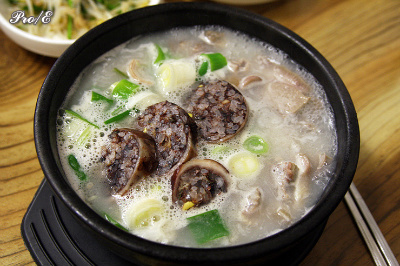

순대국밥
돼지뼈를 푹 고아 우려낸 사골 국물에 돼지 부속(염통, 오소리감투, 곱창, 대창, 머릿고기, 새끼보 등등)을 넣고 다시 한 번 끓여 만든 국.
이름은 '순댓국'이지만 다른 '○○국' 들과 달리 순대가 국물을 내는 주재료가 아니다.
따로 쪄서 썬 순대가 건더기로 조리 완료 직전에 들어갈 뿐이고, '순대로 우린 국물'(?)에 밥을 막아먹는 것이 아니다. 국물의 주재료는 돼지뼈와 돼지 부속이다.
다만 썰어낸 순대에 고소하고 매운 국물이 배면 느끼함과 비릿함이 없어져서 더 맛있게 먹을 수 있게 되기 때문에 순댓국이란 이름이 의미가 없지는 않다.
